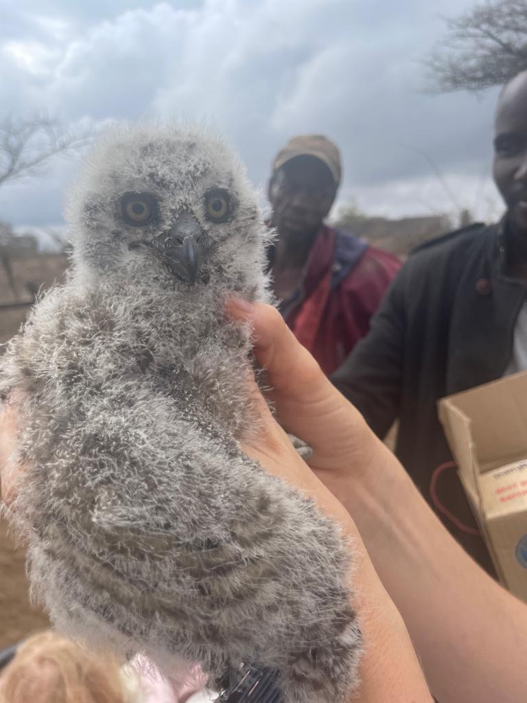

Owls
Image above is of a sleeping owlet, the cutest image i have ever seen! Ive now learnt that baby owls often sleep on their stomach because their heads are to heavy to carry them. I love owls therefore this post will cover all owls i come accross.
Spotted Eagle Owl

What you see in the image above is an owlet Spotted Eagle Owl When we first moved here i was approached by two men holding a box trying to sell it to me. I politely declined, not knowing what was inside. To my very big surprise they pulled out an owlet. My first instinct was to take it with me and nurture it, but i realized it would only encourage the continuation of such attempted sales :( . Also learnt through research that all owls leave their nest before they can fly to get out of a messy nest. The advice of the Kenya Bird of Prety trust is that when one finds young owls on the ground that one should put them high up in a tree, a shaded roof and never attempt to rescue them.
 Above is a close up image of a Spotted Eagle owl as shared by <https://shamwari.com. 1. Widespread Presence The Spotted Eagle-Owl is commonly seen south of the equator across the African continent. These owls thrive in a variety of habitats, from forests to grasslands, and are adaptable enough to roost and nest in treetops, cliff ledges, shrubs, on the ground, or even inside tree hollows. The only environment they avoid is the desert.
Above is a close up image of a Spotted Eagle owl as shared by <https://shamwari.com. 1. Widespread Presence The Spotted Eagle-Owl is commonly seen south of the equator across the African continent. These owls thrive in a variety of habitats, from forests to grasslands, and are adaptable enough to roost and nest in treetops, cliff ledges, shrubs, on the ground, or even inside tree hollows. The only environment they avoid is the desert.
Thriving in Urban Areas Their adaptability extends to suburban living, where parks and gardens provide safe spaces for roosting and nesting. Spotted Eagle-Owls are known to return to their nesting spots year after year if they remain undisturbed, making them a common sight in more urbanized areas.
The Smallest of Eagle-Owls Among all eagle-owls, the Spotted Eagle-Owl is the smallest. With a height of up to 45cm, a weight of approximately 700g, and a wingspan of about 1 meter, they may be small, but they are easily recognizable by their ear tufts and large, bright yellow eyes.
A Voracious Appetite These owls are opportunistic eaters with diets dictated by their environment. Their prey ranges from insects and frogs to lizards, small mammals, and birds. Thanks to their excellent vision, they can locate prey from high perches like tree branches or street poles before swooping in for the kill.
Swallowing Prey Whole Spotted Eagle-Owls swallow their prey whole—bones, fur, and all. If the prey is too large, they tear it into smaller pieces. After 6 to 12 hours, they regurgitate a pellet of bones and other indigestible parts, leaving evidence of their recent meal.
A True Night Owl Being nocturnal, the Spotted Eagle-Owl emerges at dusk to hunt, as many of their prey are most active during this time. It’s not uncommon to spot them perched on streetlights, using the height advantage to scan the area for food.
Superior Vision and Hearing With exceptional vision and acute hearing, these owls are well-equipped for nighttime hunting. They cannot move their eyeballs, so they must rotate their heads to look in different directions. Although far-sighted, they have excellent low-light vision, and their hearing is so sharp that they can locate prey by sound alone, even if it’s hidden from sight.
Camouflage Their brown, patterned feathers provide effective camouflage, helping them blend seamlessly into their surroundings. The soft texture of their feathers allows for silent flight, making them stealthy hunters. During the day, they sit motionless, blending into their surroundings with eyes closed, ensuring they remain undisturbed.
Distinct Vocalizations Male and female Spotted Eagle-Owls often engage in duets, with the female’s voice slightly higher-pitched than the male’s. Their communication consists of two or three-note hoots, while a single hoot is used as an alarm call.
Lifelong Mates These owls form monogamous pairs, staying together for life. During the nesting period, the male hunts for food while the female incubates the eggs. Females usually lay between two and four eggs, with an incubation period of 32 to 34 days.
Here is a great website for exploring the 18 owls found in kenya and other prey birds. <https://kenyabirdofpreytrust.org